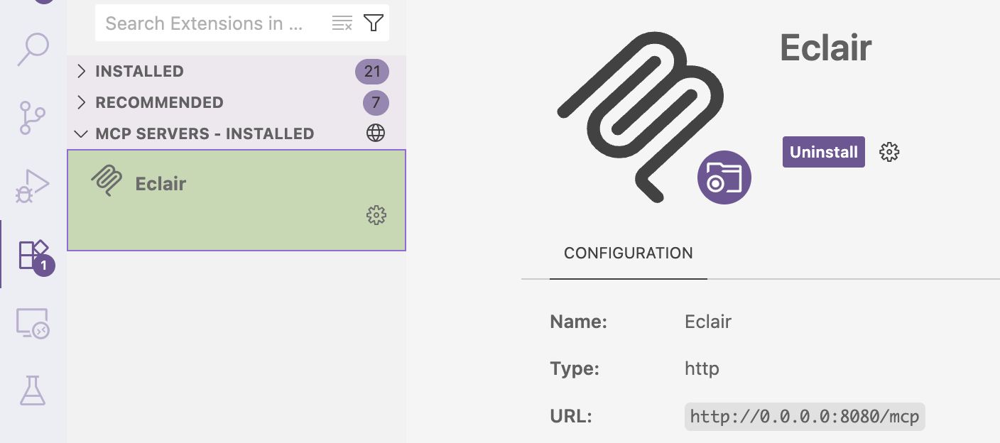
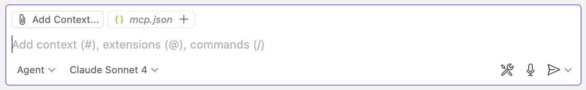
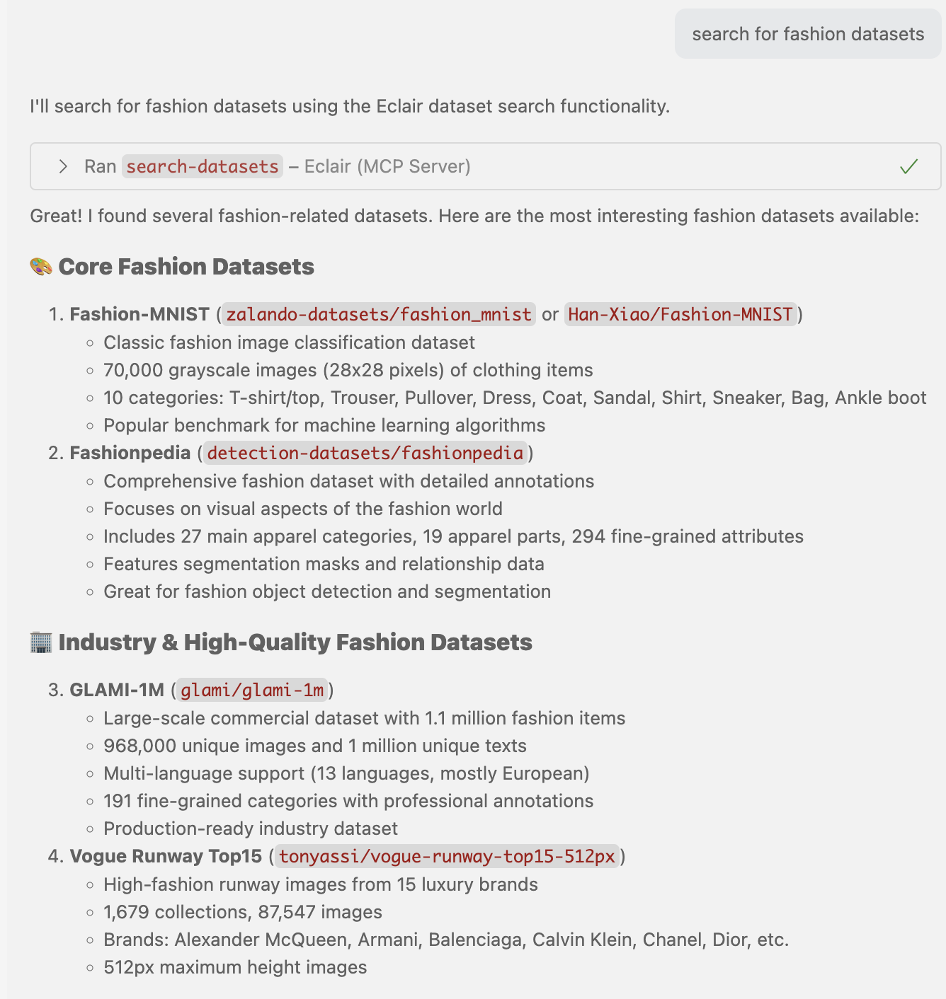
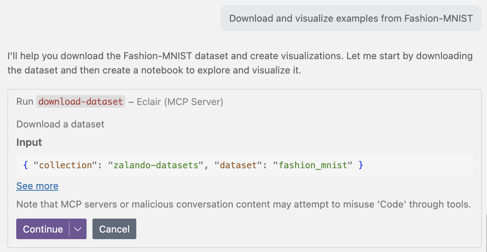
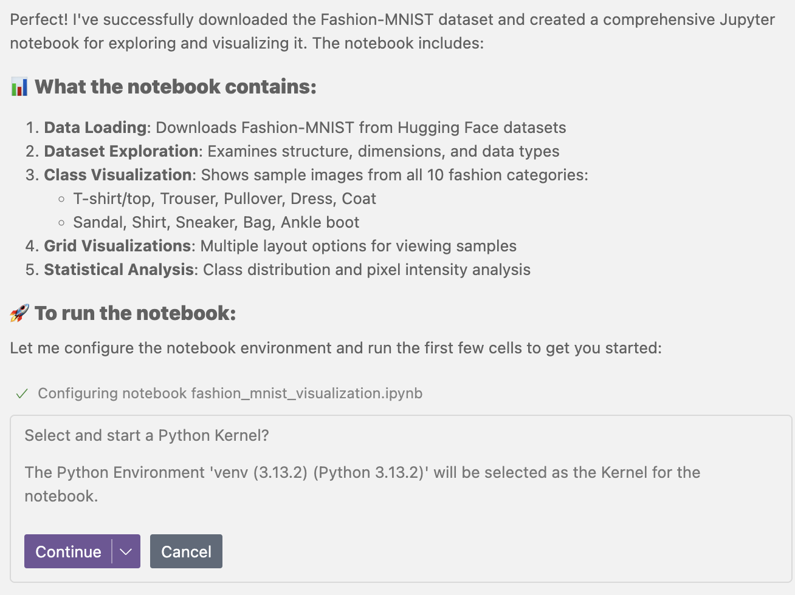
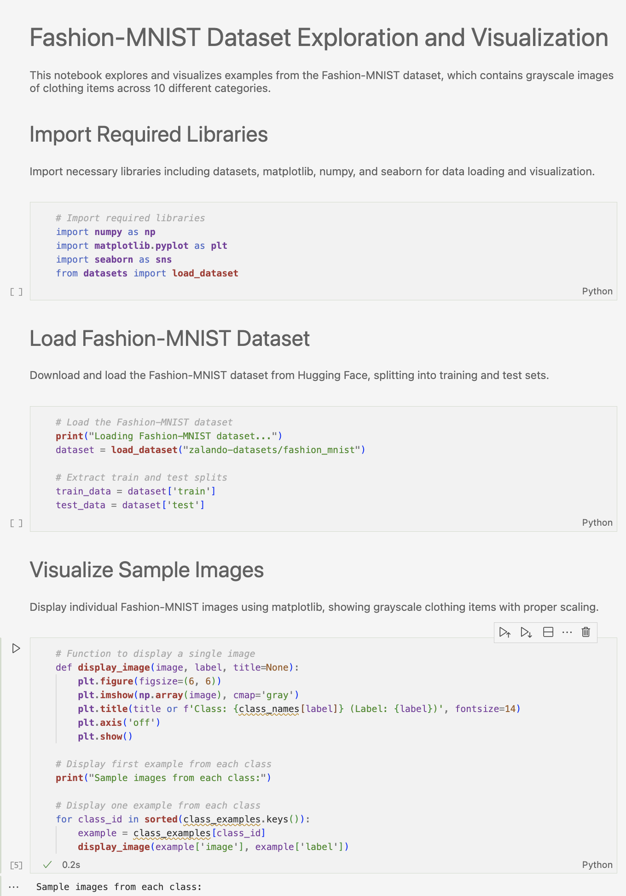
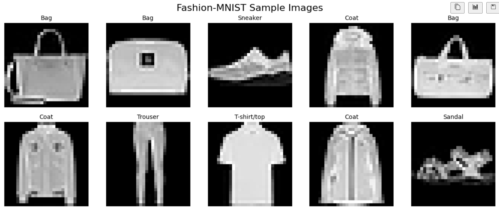
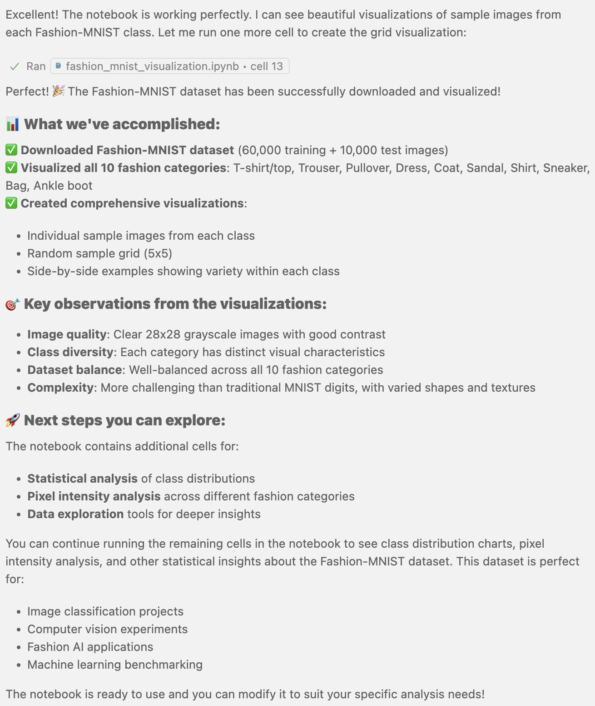

VS Code + GitHub Copilot Integration¶
Visual Studio Code with GitHub Copilot provides an excellent environment for interactive dataset exploration using Eclair. This integration brings AI-powered dataset discovery and analysis directly into your development workflow.
Prerequisites¶
Before setting up VS Code with Copilot and Eclair:
- ✅ Eclair server is installed and running
- ✅ Visual Studio Code is installed
- ✅ GitHub Copilot subscription (individual, business, or enterprise)
- ✅ MCP extension for VS Code
Installation & Setup¶
1. Install Required Extensions¶
Install these VS Code extensions if you don't already have them (but you probably do)
- GitHub Copilot - The AI pair programmer
- MCP Extension - For Model Context Protocol support
# Install via command line
code --install-extension GitHub.copilot
code --install-extension mcp.mcp-vscode
Or install through VS Code Extensions marketplace.
2. Configure MCP Server¶
Register Eclair as an MCP server in VS Code:
- Open VS Code
- Press
Ctrl+Shift+P(orCmd+Shift+Pon Mac) - Type
>mcpand select "MCP: Add Server" - Choose HTTP as the transport type
- Enter URL:
http://0.0.0.0:8080/mcp - Set ID:
Eclair - Choose Global or Workspace scope
VS Code may open an mcp.json file to confirm the configuration:
3. Start the MCP Server¶
- Go to Extensions view (sidebar box icon)
- Scroll down to MCP servers section
- Find Eclair and click the gear icon
- Select "Start Server"

4. Activate Agentic mode¶
- Open Copilot Chat panel
- Select "Agent" instead of "Ask"
- Choose your preferred AI model
- You should see
mcp.jsonadded to the context

VS Code + Copilot + Eclair is ready! You now have AI-powered dataset discovery and analysis directly in your IDE.
Usage Examples¶
Fashion Dataset Tutorial¶
Prompt:
Step 1: Search for Fashion Datasets
Copilot identifies that it can use Eclair tools and asks for permission:

Step 2: Dataset Discovery Results Copilot returns a comprehensive list of fashion-related datasets: 
Step 3: Download and Analysis Request Ask Copilot to download and visualize the data:
Copilot uses Eclair's download-dataset tool and generates a Jupyter notebook:


Step 4: Generated Notebook Copilot creates a complete Jupyter notebook with proper code: 
Step 5: Visualization Results When run, the notebook produces the requested visualizations: 
Step 6: Summary and Next Steps Copilot concludes with a summary and suggestions: 
Troubleshooting¶
Common Issues¶
"MCP server not found"
- Verify Eclair server is running:
curl http://localhost:8080/mcp - Check MCP extension is installed and enabled
- Restart VS Code
"Permission denied for MCP operations"
- Grant permission when Copilot requests it
- Check that MCP server is properly registered
- Verify server URL in
mcp.json
"No datasets found"
- Check internet connectivity
- Try broader search terms
- Verify Eclair server has access to upstream sources
Copilot not using Eclair tools
- Ensure
mcp.jsonappears in chat context - Try more explicit requests: "Use Eclair to find datasets about..."
- Restart the MCP server from Extensions panel
Debug Steps¶
-
Check MCP Configuration:
-
Test Eclair Connection:
-
Restart Components:
- Restart VS Code
- Restart Eclair server
- Disable/enable MCP extension
Configuration Verification¶
Check that everything is properly set up:
- Extensions: Ensure GitHub Copilot and MCP extensions are active
- MCP Server: Verify Eclair appears in Extensions > MCP servers
- Connection: Confirm server status shows as "Running"
- Chat Context: Check that
mcp.jsonappears in Copilot chat context